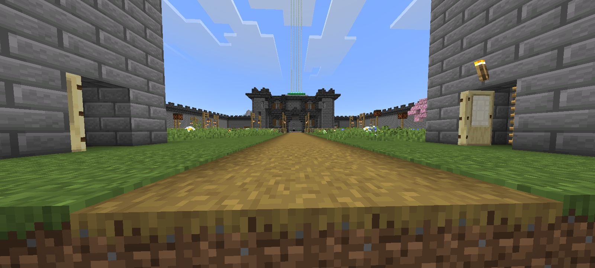
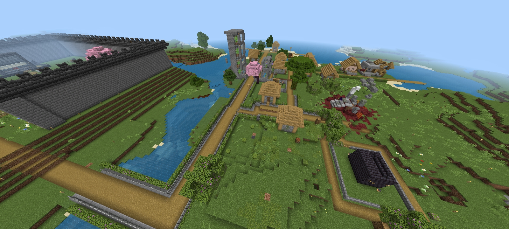
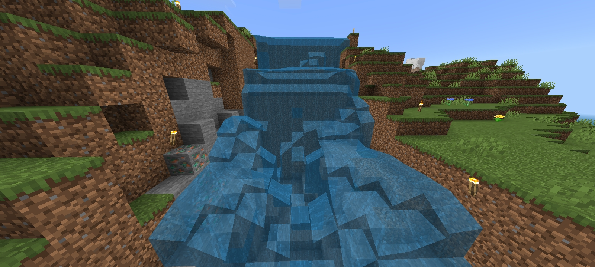
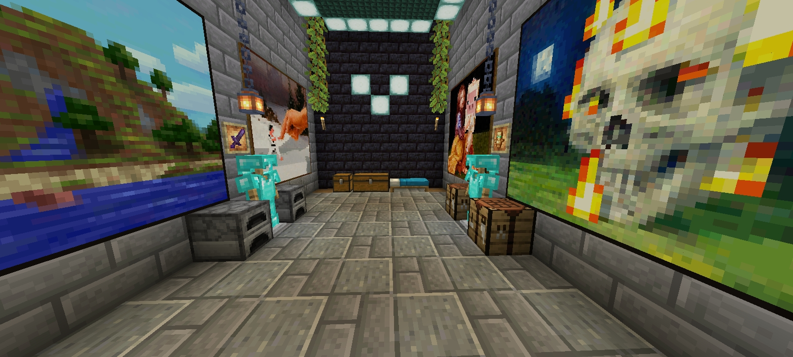
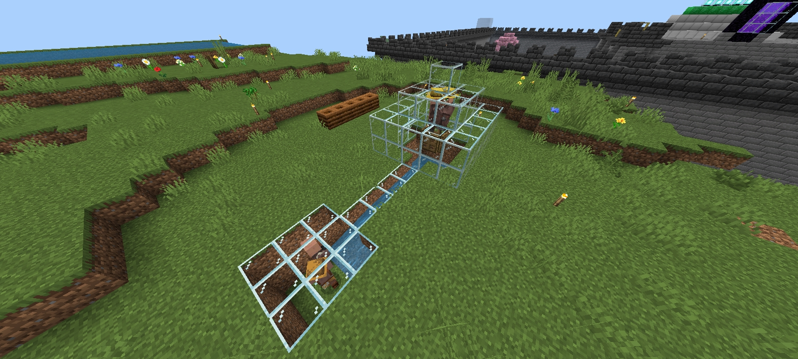
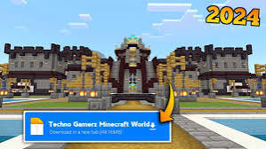
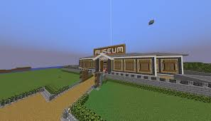
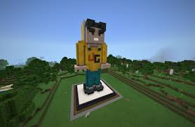

Nextup Studio Minecraft World — Waterfall & Villager Map





Download my Minecraft Bedrock world with custom biomes, a secret waterfall packed with treasure, and a fully automatic villager breeder system. Expand, explore, and survive in one of the best community maps!
Download My World (.mctemplate)Techno Gamerz Minecraft World Download (.mcworld)



Get the viral Techno Gamerz World for Minecraft Bedrock (fan edition, direct .mcworld download)!
Play in the iconic survival world seen in Techno Gamerz’s YouTube series. Epic builds, creative base, and true MC adventure.
Fan download only; all credit and rights to Techno Gamerz (Ujjwal Chaurasia). Support the original creator on YouTube.
Latest Minecraft World Updates
- Techno Gamerz World for Bedrock now ready for instant download!
- Hidden Waterfall: Adventure treasure spot improved.
- Villager Breeder: Easiest auto-farming and trading system added.
- Site speed and gallery improved for all devices and screen sizes.